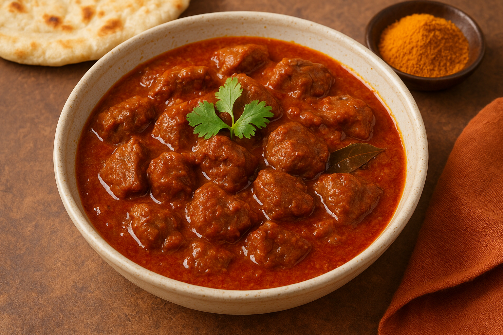

Home
Rogan Josh

Description
Rogan Josh is a fragrant and flavorful curry that originated in Kashmir
and has become one of the most celebrated dishes of Indian cuisine.
Traditionally made with tender pieces of lamb or mutton, it is slow
cooked in a rich, aromatic sauce infused with spices such as cardamom,
cloves, cinnamon, and Kashmiri red chili, which gives the dish its deep
red color without being overwhelmingly spicy. The name Rogan Josh
comes from Persian, where rogan means oil or clarified butter and josh
means intense heat or passion, reflecting its vibrant appearance and
bold taste. Often finished with yogurt for creaminess and garnished with
fresh herbs, Rogan Josh pairs perfectly with steamed basmati rice
or naan, making it a comforting yet elegant dish enjoyed both at home and in festive meals.
Ingredients
- 1 lb lamb or mutton, cut into chunks
- 2 tbsp ghee or oil
- 1 large onion, finely sliced
- 3 cloves garlic, minced
- 1-inch piece ginger, grated
- 2 tsp ground coriander
- 1 tsp ground cumin
- 1 tsp paprika
- 1/2 tsp turmeric
- 1-2 tsp Kashmiri red chili powder (adjust to taste)
- 4-5 green cardamom pods
- 4-5 whole cloves
- 1 cinnamon stick
- 1 cup plain yogurt
- 1 cup water or stock
- Salt to taste
- Fresh cilantro for garnish
Steps
- Heat ghee or oil in a large pot over medium heat. Add the sliced onions and cook until golden brown.
- Add the minced garlic and grated ginger, sautéing for another 2 minutes until fragrant.
- Add the ground coriander, cumin, paprika, turmeric, and Kashmiri red chili powder. Cook the spices for 1-2 minutes to release their flavors.
- Add the lamb or mutton chunks to the pot, browning them on all sides.
- Add the cardamom pods, cloves, and cinnamon stick to the pot.
- Stir in the yogurt, mixing well to coat the meat and spices. Cook for a few minutes until the yogurt is well incorporated.
- Add water or stock to the pot, bringing it to a boil. Reduce heat to low, cover, and let it simmer for 1.5 to 2 hours, or until the meat is tender.
- Season with salt to taste. Remove the whole spices before serving.
- Garnish with fresh cilantro and serve hot with steamed basmati rice or naan bread.